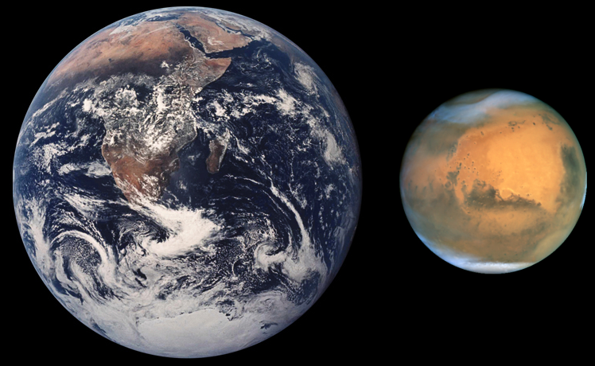
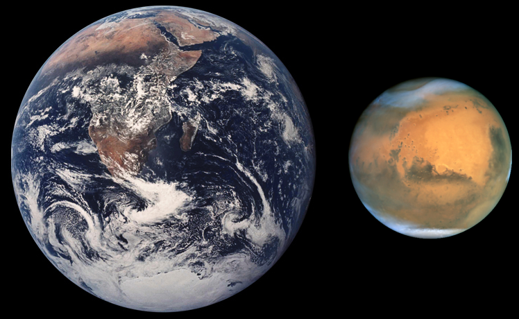

Introdction
Mars is no place for the faint-hearted. It’s dry, rocky, and bitter cold. The fourth planet from the Sun, Mars is one of Earth's two closest planetary neighbors (Venus is the other). Mars is one of the easiest planets to spot in the night sky – it looks like a bright red point of light.
Namesake
Mars was named by the ancient Romans for their god of war because its reddish color was reminiscent of blood. Other civilizations also named the planet for this attribute – for example, the Egyptians called it "Her Desher," meaning "the red one." Even today, it is frequently called the "Red Planet" because iron minerals in the Martian dirt oxidize, or rust, causing the surface to look red.
Potential for Life
Scientists don't expect to find living things currently thriving on Mars. Instead, they're looking for signs of life that existed long ago, when Mars was warmer and covered with water.
Size and Distance
With a radius of 2,106 miles (3,390 kilometers), Mars is about half the size of Earth. If Earth were the size of a nickel, Mars would be about as big as a raspberry.
From an average distance of 142 million miles (228 million kilometers), Mars is 1.5 astronomical units away from the Sun. One astronomical unit (abbreviated as AU), is the distance from the Sun to Earth. From this distance, it takes sunlight 13 minutes to travel from the Sun to Mars.
Orbit and Rotation
As Mars orbits the Sun, it completes one rotation every 24.6 hours, which is very similar to one day on Earth (23.9 hours). Martian days are called sols – short for "solar day." A year on Mars lasts 669.6 sols, which is the same as 687 Earth days.
Mars' axis of rotation is tilted 25 degrees with respect to the plane of its orbit around the Sun. This is another similarity with Earth, which has an axial tilt of 23.4 degrees. Like Earth, Mars has distinct seasons, but they last longer than seasons here on Earth since Mars takes longer to orbit the Sun (because it's farther away). And while here on Earth the seasons are evenly spread over the year, lasting 3 months (or one quarter of a year), on Mars the seasons vary in length because of Mars' elliptical, egg-shaped orbit around the Sun.
Moons
Mars has two small moons, Phobos and Deimos, that may be captured asteroids. They're potato-shaped because they have too little mass for gravity to make them spherical.
The moons get their names from the horses that pulled the chariot of the Greek god of war, Ares.
Phobos, the innermost and larger moon, is heavily cratered, with deep grooves on its surface. It is
slowly moving towards Mars and will crash into the planet or break apart in about 50 million years.
Deimos is about half as big as Phobos and orbits two and a half times farther away from Mars.
Oddly-shaped Deimos is covered in loose dirt that often fills the craters on its surface, making it
appear smoother than pockmarked Phobos.